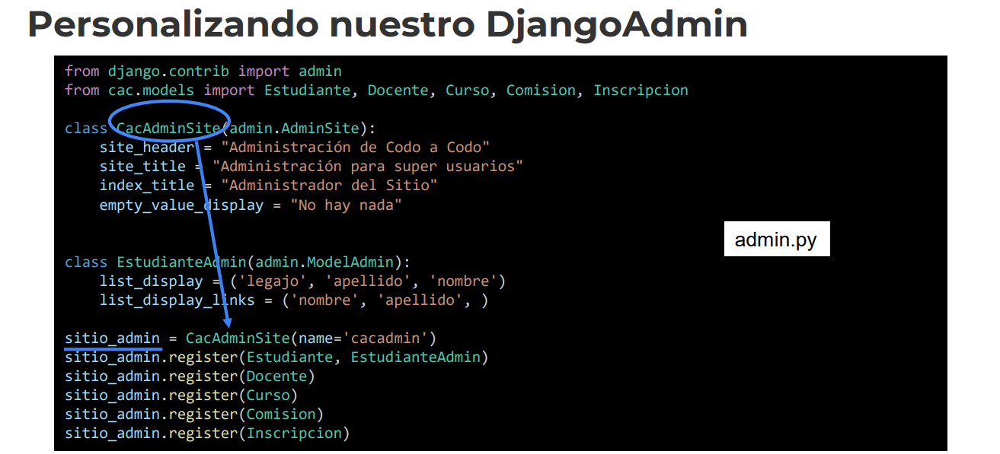
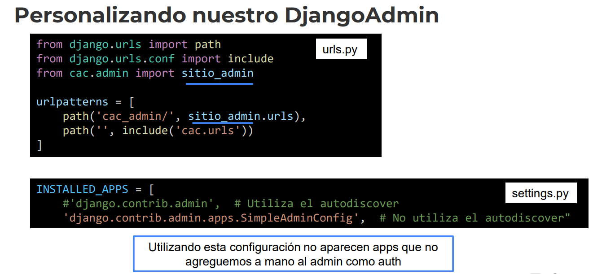
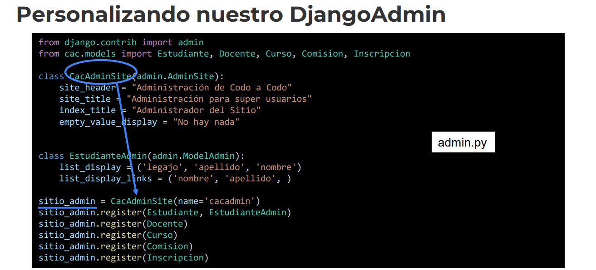
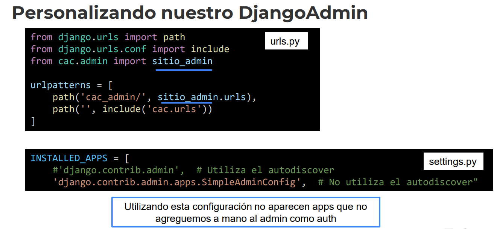
Desarrollo Django
1. Modelos muchos a muchos
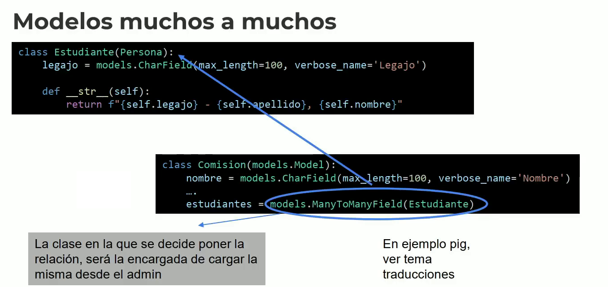
ManyToManyField -> Donde lo decidimos poner.. Genera una tabla intermedia.
*Un estudiante puede pertenecer a muchas comisiones..
Una comision puede tener muchos estudiantes
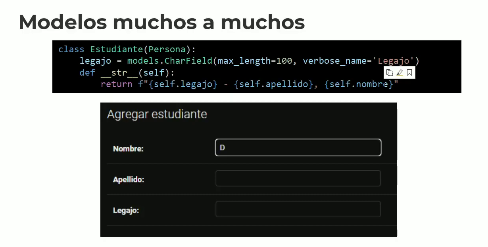
__str__ para mostrar el modelo en concreto..
* La representación en String.
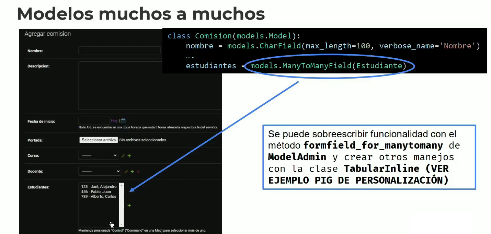
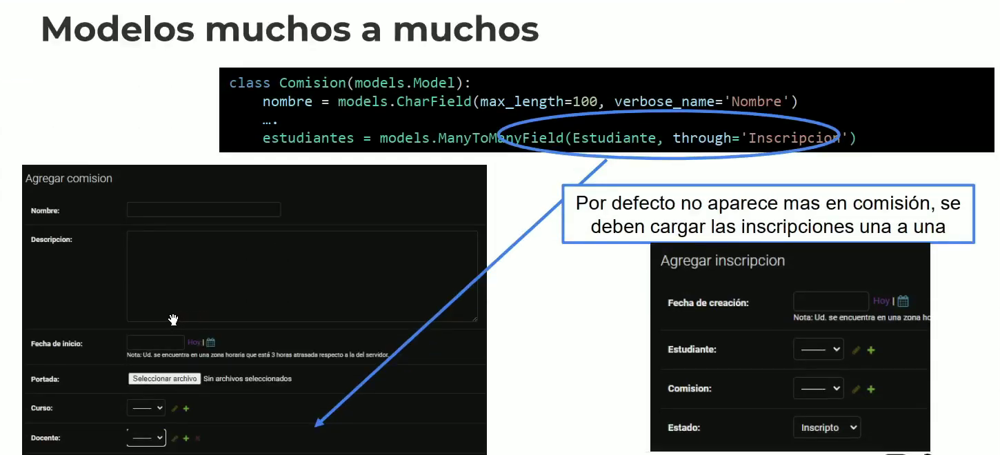
--- Ejemplo práctico.
django.contrib.admin -> Instalada.
* Para sobreescrir el Django Admin..
class EstudianteAdmin(admin.ModelAdmin):
list_display = ('legajo', 'apellido', 'nombre') -> Manera de visualizar el modelo en el Djangoadmin
# list_editable = ('apellido', 'nombre') - Para tener campos editables o no
list_display_links = ('legajo',) - Botones cickleabes
search_fields = ['apellido'] - Para buscar dentro de apellido
class DocenteAdmin(admin.ModelAdmin):
list_display = ('cuit', )
form = DocenteForm -> Para ver un form, para agregar el Docente
--- Otra manera, con los decoradores
@admin.display(description='Nombre del curso en mayuscula')
def curso_mayuscula(objeto):
return f"El Curso {objeto.nombre}".upper() -> De esta manera especificamos la data en mayúscula
* Son como "etiquetas" que no afectarán el modelo.
@admin.register(Curso) -> modelo que se registra para el curso
class CursoAdmin(admin.ModelAdmin):
# formfield_overrides = {
# models.TextField: {'widget': widgets.CacTextWidget}
# }
list_display = (curso_mayuscula, 'curso_minuscula', ) -> De esta manera podemos modificar la manera de mostrar los elementos
@admin.display(description='Nombre del curso en minuscula')
def curso_minuscula(self, objeto): -> En minúscula, le agregamos además el nombre de las columnas
return f"Curso {objeto.nombre}".lower()
--- Un model @admin, asociado a un modelo se registra una única vez..
@admin.register(Comision)
class ComisionAdmin(admin.ModelAdmin):
list_display = ('nombre', 'fecha_inicio', ) -> Columnas a mostrar
def formfield_for_manytomany(self, db_field, request, **kwargs): -> Sobreescribimos el método de obtener el mucho a muchos.
if db_field.name == "estudiantes":
kwargs["queryset"] = Estudiante.objects.filter(legajo__startswith="2").order_by("apellido")
return super().formfield_for_manytomany(db_field, request, **kwargs)
2. Personalizando el sitio por defecto del DjangoAdmin
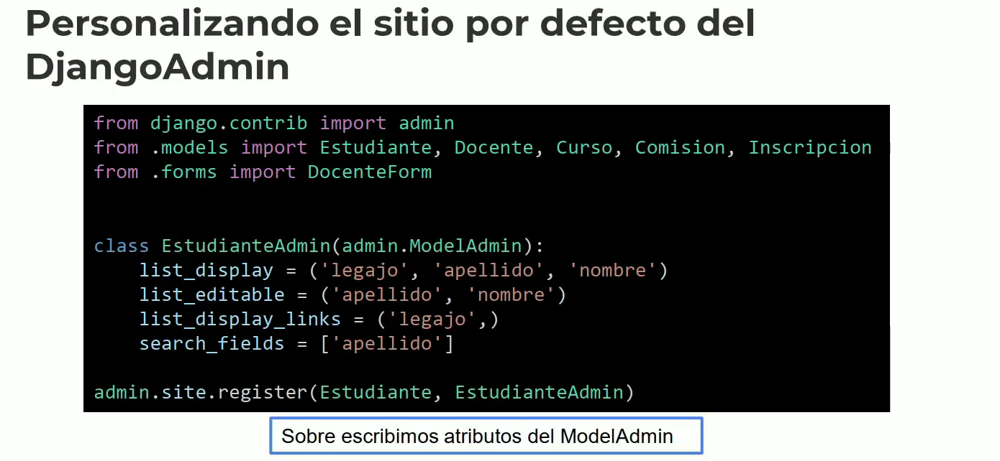
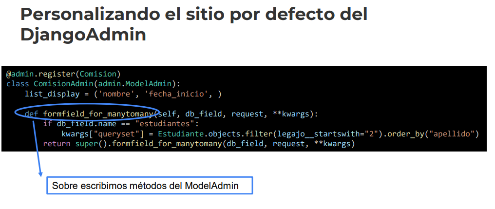
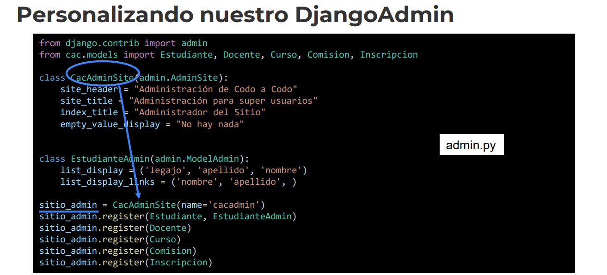
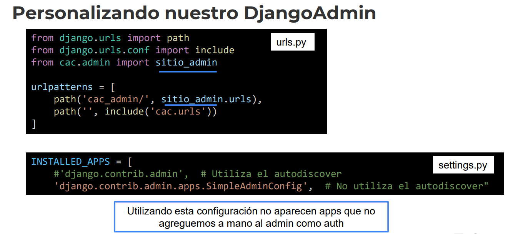
3. Personalizando nuestro DjangoAdmin
--- Para configurar nuestro pgAdmin
INSTALLED_APPS = [
# 'django.contrib.admin', # Utiliza el autodiscover para obtener el admin de todas las aplicaciones en "INSTALLED_APPS"
'django.contrib.admin.apps.SimpleAdminConfig', # No utiliza el autodiscover se debe hacer todo a mano"
'django.contrib.auth',
'django.contrib.contenttypes',
'django.contrib.sessions',
'django.contrib.messages',
'django.contrib.staticfiles',
'django_extensions',
'cac'
]
Ahora desde el admin.py...
class CacAdminSite(admin.AdminSite): -> Modificamos el formato del django admin, como se mostrarán los titulos y demas.
site_header = "Administración de Codo a Codo"
site_title = "Administración para super usuarios"
index_title = "Administrador del Sitio"
empty_value_display = "No hay nada"
Instanciamos el objeto de arriba.. Y le registramos los modelos..
sitio_admin = CacAdminSite(name='cacadmin') -> Instanciamos
sitio_admin.register(Docente)
sitio_admin.register(Curso) - Registramos los modelos
sitio_admin.register(Estudiante, EstudianteAdmin)
sitio_admin.register(Comision, ComisionAdmin)
--- Ahora desde las urls.py debemos importar el sitio_admin
from django.contrib import admin
from django.urls import path
from django.urls.conf import include
from cac.admin import sitio_admin -> Importamos
urlpatterns = [
path('cac_admin/', sitio_admin.urls), -> Lo agregamos
* Podriamos agregar diferentes rutas para mostrar o obviar diferente información.
# path('super_admin/', admin.site.urls),
path('', include('cac.urls'))
]
--- Sobreescribir el Html del django Admin..
Agregamos el templates en la raíz del proyecto.. Agregamos la carpeta admin, y un base.html
{% extends 'admin/base.html' %}
{% block extrastyle %}{{ block.super }}
< style>
:root {
--primary: #9774d5;
--secondary: #785cab;
--link-fg: #7c449b; -> Agregamos estilos de Css al Django Admin.
--link-selected-fg: #8f5bb2;
}
< /style>
{% endblock %}
---
# nuestro propio sitio admin
from django.contrib import admin
from cac.models import Estudiante, Docente, Curso, Comision, Inscripcion
class CacAdminSite(admin.AdminSite):
site_header = "Administración de Codo a Codo"
site_title = "Administración para super usuarios"
index_title = "Administrador del Sitio"
empty_value_display = "No hay nada"
# Versión 1: si definimos un modelo intermedio
class InscripcionInline(admin.TabularInline):
model = Inscripcion
extra = 1
# # Versión 2:si no tenemos un modelo intermedio (cambia la asociación del inline en admins)
# class InscripcionInline(admin.TabularInline): - La tabla intermedia, hereda de TabularInline
# model = Comision.estudiantes.through
# extra = 1 # cuantas opciones de carga aparecen por defecto
class EstudianteAdmin(admin.ModelAdmin):
list_display = ('legajo', 'apellido', 'nombre')
list_display_links = ('nombre', 'apellido', )
fields = (('nombre', 'apellido'), 'legajo') # Si no hacemos un valor editable debe manejarse dicha situación de alguna manera.
# ambas versiones
inlines = (InscripcionInline, ) -> Hereda de InscripcionInline
class ComisionAdmin(admin.ModelAdmin):
# ambas versiones
inlines = (InscripcionInline, )
# version 2 evitamos doble carga
exclude = ('estudiantes', ) -> Excluimos
* Con el TabularInline -> Nos queda de manera dinámica todo enganchado y utilizable.
--- Ahora en el models.py
class Comision(models.Model):
class Meta:
verbose_name_plural = _("Comisiones")
nombre = models.CharField(max_length=100, verbose_name='Nombre')
descripcion = models.TextField(null=True, verbose_name='Descripcion')
fecha_inicio = models.DateField(verbose_name='Fecha de inicio')
portada = models.ImageField(upload_to='imagenes/comisiones/', null=True, verbose_name='Portada', default=None)
curso = models.ForeignKey(Curso, on_delete=models.CASCADE)
docente = models.ForeignKey(Docente, on_delete=models.SET_NULL, null=True)
# version 1 admin
estudiantes = models.ManyToManyField(Estudiante, through='Inscripcion') -> Si con la tabla intermedia DEFINIDA, Inscripcion, con esa tabla hacemos la relación
# version 2 admin
# estudiantes = models.ManyToManyField(Estudiante)
def __str__(self):
return self.nombre
def delete(self, using=None, keep_parents=False):
self.portada.storage.delete(self.portada.name) # borrado fisico de la imagen
super().delete()
class Inscripcion(models.Model): -> Esta tabla hará la relación
class Meta:
verbose_name_plural = _("Inscripciones")
class Estado(models.IntegerChoices):
INSCRIPTO = 1
CURSANDO = 2
EGRESADO = 3
fecha_creacion = models.DateField(verbose_name='Fecha de creación')
estudiante = models.ForeignKey(Estudiante, on_delete=models.CASCADE)
comision = models.ForeignKey(Comision, on_delete=models.CASCADE)
estado = models.IntegerField(choices=Estado.choices, default=Estado.INSCRIPTO)
# opción sin crear la clase interna Estado
# estado = models. IntegerChoices("Estado", 'INSCRIPTO CURSANDO EGRESADO')
def __str__(self):
return self.id
# Versión 1: si definimos un modelo intermedio
class InscripcionInline(admin.TabularInline):
model = Inscripcion -> Ahora si tenemos la tabla intermedia
extra = 1
# # Versión 2:si no tenemos un modelo intermedio (cambia la asociación del inline en admins)
# class InscripcionInline(admin.TabularInline):
# model = Comision.estudiantes.through
# extra = 1 # cuantas opciones de carga aparecen por defecto
* De esta manera tendremos un TabularInline, con una tabla definida.